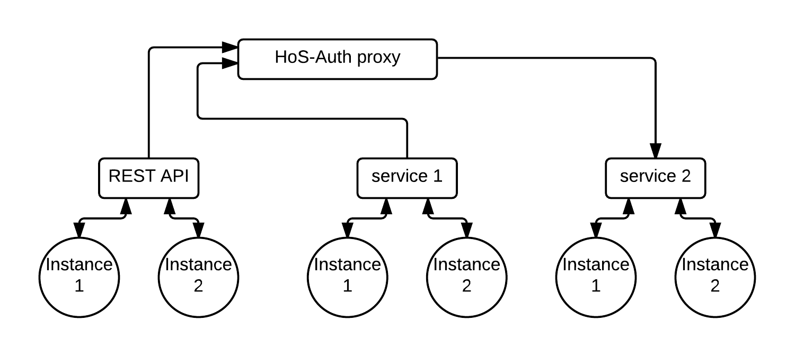

SCALE DYNAMICALLY
HoS is a micro-service based, dynamically scalable operating environment that can be used both as a web framework or service base operations.
For starting with HoS you need to define a basic contract for each of your services in the environment, you can take a look at the example.
You can then simply require HoS communication and provides it with your service contract for more information please check HoSCom. The other part needs to be running in order for the packages to deliver to other services is authentication service you can check out information about that HoSAuth in its repo.
Every single call in HoS environment should be verified by authentication service according to the type of the call and requirement of its content. You can simply run multiple instances of a service to scale to the higher request rate, just as simple as that. there is a RESTfull web API translating HTTP and HTTPS calls into rabbitMq messages and deliver them into their destination after the message has been verified and send the reply back as a response to the same call.
This example runs two services and one authentication service send two messages which one of them will fail with code 401:
HoSCom = require'hos-com'# service 1 implementationserviceContract1 = require'./serviceContract1'HoSService1 = serviceContract1HoSService1connectthenHoSService1sendMessage foo: "1" "ServiceName"task: 'TaskName'method: 'METHOD'thenconsolelog replycatchconsolelog replyHoSService1sendMessage bar: "1" "ServiceName"task: 'TaskName'method: 'METHOD'thenconsolelog replycatchconsolelog reply# service 2 implementationserviceContract2 = require'./serviceContract2'HoSService2 = serviceContract2HoSService2connectHoSService2on 'TaskName.METHOD'msg.content.foo = 2msgreply msgcontentfoo# authentication serviceHoSAuth = require'hos-auth'authenticationService =HoSServiceconnect@HoSAuthon 'message'if msgcontentfoomsgacceptelsemsgreject